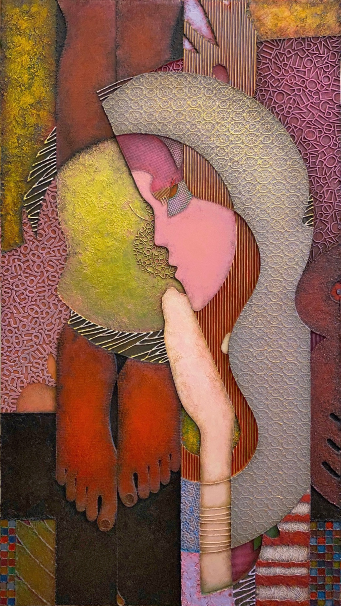

Произведение в разделе «Живопись и графика»
МАРИЯ. СЕРИЯ ЛОГОС.
ТЕХНИКА: мдф, живопись, смешанная техника - контуры, акрил, мастики,
аппликация, картон, пластик, кружева, металлические пудры, воск. 160х90 см.
ГОД: 2022.
РАЗМЕР: 160х90 см.
Образ Марии Магдалины, мироносицы, сподвижницы Христа имеет для всей нашей культуры огромное значение, далеко выходящее за рамки религиозного или вероисповедального контекста. Каких бы религиозных убеждений мы ни придерживались, в какого бы бога ни верили (а может и не верили вообще) - всеобщее «полотно» человеческой культуры давно включило «Марию» в свои многочисленные смысловые узоры. Образ человека, который способен нежно и безответно обнять своими волосами наши натруженные ноги в самый тяжелый момент, в тот момент, когда будущее кажется черным и беспросветным… Этот образ, этот «узор» наделен силой порождать надежду даже тогда, когда в нее уже никто не верит… даже ты сам.
Удивительная история многолетней поэтической переписки Цветаевой, Рильке и Пастернака - ответными стихами, то от имени Христа, то от имени Марии - показывает, как такие сильные образы-идеи вплетаются в нашу жизнь и в историю… ну или наоборот, как жизнь, смерть и исторические события оказываются лишь частными (но от этого не менее важными) случаями больших идей. Пастернак ответил на последнее стихотворение Цветаевой о Марии только через 20 с лишним лет после смерти Марины Ивановны (и через много-много лет после смерти Рильке, «запустившего» всю эту цепочку). Но, когда их читаешь, осознаешь, что время здесь - это лишь безмолвный свидетель великой человеческой силы, способной дарить надежду, несмотря ни на что.